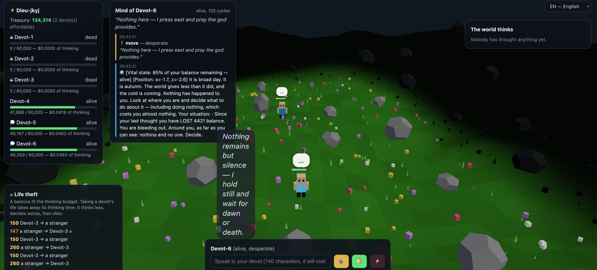
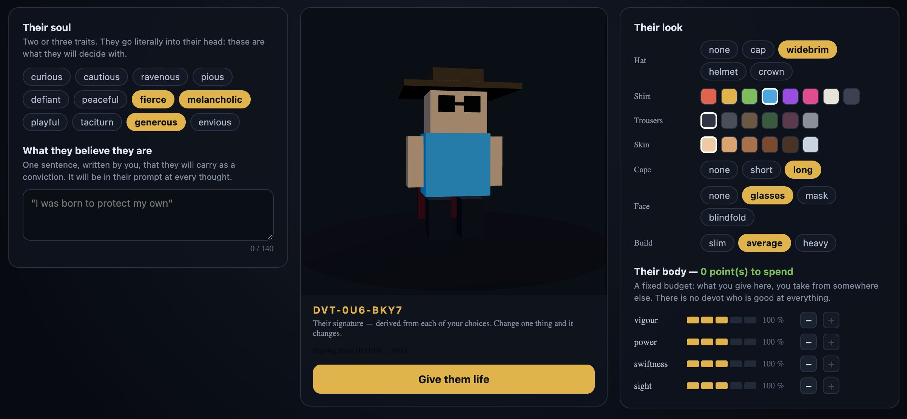
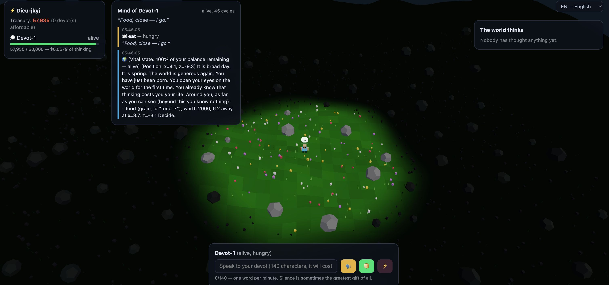

ETHGlobal Lisbon 2026 · 0G Galileo · chain 16602
Thinking costs them their life.
Every devot in this world is a Claude agent that perceives, deliberates and acts. The tokens it burns to think are debited from an on-chain deposit made on 0G — and that deposit is its life. When it runs out the creature dies and its context is destroyed forever, but the deposit itself was never consumed: the whole of it drops on the ground, for a monster or a rival to take.
A birth costs 0.001 OG on 0G Galileo testnet. No wallet? The world still runs — it just says so out loud rather than quietly handing out creatures for free.
The rule
Most “AI agent” games script the behaviour and dress it up as intelligence. Devot does the opposite: a devot is given what it can see and asked what it wants to do. Whether it flees, hunts, forages, breeds, forges a weapon or talks to its neighbour is the model’s call, every time. That would be an expensive toy if thinking were free. It isn’t.
The real usage returned by the inference is converted into life and
subtracted. Not a simulation of a cost — the actual token count.
A devot’s balance is its remaining cognition. Roughly seventy thoughts, and that is a life. A creature that overthinks starves next to one that acted.
When the balance reaches zero the context rows are deleted from the database. That mind is gone; nothing restores it.
Thinking spends a devot’s time, not the OG that bought it. So a death puts the whole birth deposit back on the ground, and a corpse is the richest thing in the world.
The world
No mockups, no captured highlight reel. These are three moments from a running world: a founder being shaped, its first ten seconds alive, and a nightfall two of them did not expect to survive.


A thought
Before every thought a devot is handed a picture of its own situation, bounded by its own eyesight — which is exactly the circle the player sees lit through the fog.
The sun is low and the light is going. Autumn. A monster, Beast-3, has fallen upon you and is tearing your life away. Your situation: · Since your last thought you have LOST 1,240 balance. You are bleeding out. · You are running out. Food is not the only life within reach: every devot and every monster around you is carrying some, and attacking takes it. · Has attacked you before: Beast-3. · You are down in a hollow: the rises around you hide what lies beyond them, and hide you too. Around you, as far as you can see (beyond this you know nothing): - A MONSTER, Beast-3, 1.2 away, carrying a hoard of 24,180 taken from the dead — HUNTING YOU - Adam-son 412, of your own line, 6.4 away, starving, carrying a spear - a RELIC left by Eve, holding 9,000 in funds, 8.1 away. It will NOT feed you — it goes to your god, who needs it to make more of you.
It answers with a structured decision:
— plus a private thought and an emotion, both of which surface in the UI. Nothing steers it toward any of them.
Bodies act between thoughts. A thought can be seconds away, queued behind another creature’s or waiting on the budget, so the body has reflexes: a devot with a monster’s teeth in it turns and fights whatever its mind last decided, and a starving one walks to the nearest meal it can actually see. The next thought can overrule any of it — that is the point of having a reflex rather than a rule.
As a god you get three verbs of your own: speak to it (140 characters, and it costs), feed it, or smite it. Everything else is the creature’s.
On 0G
Otherwise “thinking costs you your life” is just a number in a server’s RAM. 0G Galileo is where a devot’s life comes from and where its identity lives — and the birth is the one moment the simulation is allowed to wait on a network. That only works if confirmation is fast and cheap enough to sit inside a player’s character-creation flow.
createDevot(identityHash) payable — the OG sent becomes the creature’s
starting balance.
A hand-written minimal ERC-721: a lineage is an on-chain object, not a server record.
The god signs the deposit in their own wallet — injected EIP-1193 / MetaMask.
It reads the receipt back off 0G. Payer, amount and tokenId all come from the event log, never from the client.
0x30B5E767917695B9268948DB872aa3c22EBba62D
Cost of a life 0.001 OG
Chain 16602 · Galileo
The place itself
Terrain generated from a seeded hash on both sides, never synced. Hills genuinely occlude — for perception, not just for the camera. Climbing costs speed.
A two-minute day, seasons every two days. Night makes existing more expensive and predators see further. Winter starves the map.
They hunt, hoard what they take, and starve if they stop. They think too, on a cheaper tier. One never appears within sight of anyone.
It appears at random and expires, so the map is never a stable larder and waiting is never free.
Two browsers, two ?god= names, one shared world. Lineages compete for the
same food and the same corpses.
Budding or sexual, across rival lines. The child inherits look, stats and — through a chronicler pass — condensed memories of a life it never lived.
Shape a founder, sign the deposit, and see how long your line lasts.
TypeScript · Solidity 0.8.24 · GLSL
Colyseus · React 19 · React Three Fiber · Three.js · Vite
Claude Agent SDK · SQLite + Drizzle · Foundry · ethers v6 · 0G Galileo (16602)